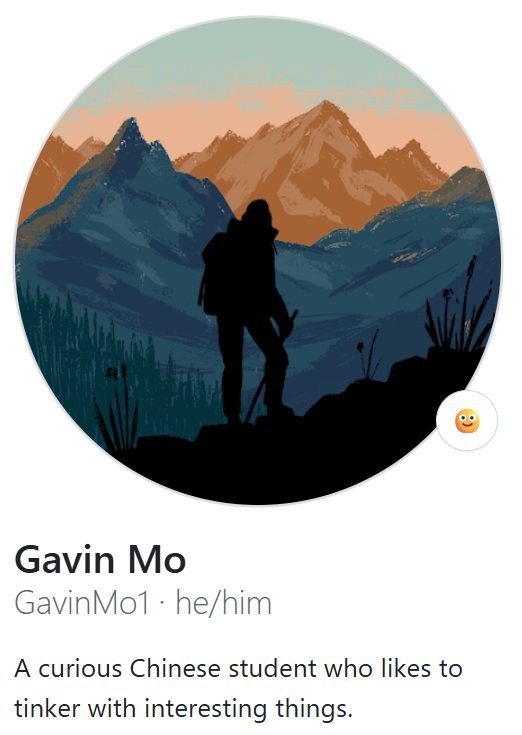

这里主要记录开发笔记、项目实践，以及一些值得长期整理的技术文章。
博客本身基于 Hexo + Fluid + GitHub Pages 搭建。完整搭建说明也放在这里，但默认收起，不会直接把“关于”页撑成一篇长文。
Hexo
静态博客生成
Markdown
内容写作与管理
Fluid
主题与页面外观
GitHub Pages
免费静态托管
我是谁？

关于本站
这个博客更偏向“开发过程中的长期笔记”，不是资讯流，也不是纯粹的作品展示页。
我希望这里的内容具备两个特点：
- 能回看：过一段时间再看，仍然能迅速找回思路。
- 能复用：下一次遇到类似问题时，可以直接拿来当参考。
搭建说明
一句话概括：写 Markdown，交给 Hexo 生成静态页面，再通过 GitHub Pages 部署上线。
展开完整搭建教程
这是一个基于 Hexo + Markdown + GitHub Pages 的个人博客方案，部署成本低、维护简单、主题生态丰富。
在真正动手前，先来看一下整个系统是如何协作的：
- Hexo 是一个 静态博客生成器，你只负责写 Markdown 文件，Hexo 会把它们转换成 HTML 页面。
- GitHub Pages 是一个 免费静态网站托管服务，负责把生成好的网页放到公网。
- 主题（如本网站使用的 Fluid）决定博客的外观和交互。
- Git 负责把你本地生成的页面同步到 GitHub。
整个流程就是：你写 Markdown → Hexo 生成网页 → Git 推送 → GitHub Pages 自动上线。
一、创建 Hexo 博客站点
### 1. 全局安装 Hexo
1
pnpm install -g hexo-cli
### 2. 初始化博客目录
选择一个文件夹作为你存放整个博客的目录，然后在这个目录下执行初始化命令：
1
hexo init my-blog
接下来进入目录，安装依赖：
1
2
cd my-blog
pnpm install
执行完后，目录结构会变成这样：
1
2
3
4
5
6
7
8
.
├── _config.yml
├── package.json
├── scaffolds
├── source
│ ├── _drafts
│ └── _posts
└── themes
这里你需要记住三件事：
- **文章写在 `source/_posts`**
- **网站行为改 `_config.yml`**
- **样式和布局在 `themes`**
### 3. 本地预览博客
创建第一篇文章：
1
hexo new "hello-world"
启动本地服务器：
1
hexo server
浏览器访问：
1
http://localhost:4000
如果能看到网页，说明本地博客环境已经可用。
二、GitHub Pages 部署
### 1. 创建 GitHub Pages 仓库
在 GitHub 新建仓库，**名称必须是**：
1
你的用户名.github.io
这是 GitHub Pages 的硬性规则。
### 2. 配置 Hexo 部署信息
编辑博客根目录下的 `_config.yml`：
1
2
3
4
deploy:
type: git
repo: git@github.com:你的用户名/你的用户名.github.io.git
branch: main
注意两点：
- `repo` 必须是 `git@github.com` 形式
- `branch` 要和 GitHub 默认分支一致
### 3. 安装部署插件并发布
1
pnpm install hexo-deployer-git
然后执行：
1
2
3
hexo clean
hexo generate
hexo deploy
几分钟后访问：
1
https://你的用户名.github.io
博客就正式上线了。
三、主题选择与美观优化
如果你觉得本博客的主题不错，可以参考这个方向；如果你喜欢别的风格，也可以自己探索。
### 安装 Fluid 主题
1
pnpm install hexo-theme-fluid
打开博客根目录下的 `_config.yml`，把 `theme` 字段修改为 `fluid`。
为了更安全地修改主题配置，可以在根目录新建 `_config.fluid.yml`，再把主题默认配置复制出来按需调整。
附：批量给 Markdown 添加头部
如果你已经有大量 Markdown 笔记，需要批量补充 front matter，一个实用思路是：
- 用脚本读取文件名和正文前几百字
- 让 AI 自动生成分类和标签
- 对生成结果做缓存，避免重复计算
如果你的博客内容来自另一个笔记仓库，还可以维护一个“精选列表”，按文件变化同步覆盖，只保留博客需要的文章。